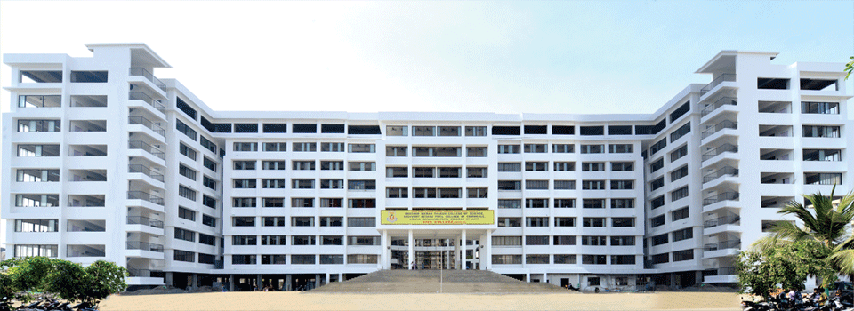

HISTORY

The Vishnu Waman Thakur Charitable Trust presided by Hitendra Thakur, the Member of Legislative Assembly from Vasai (Vidhan Sabha constituency), established the Utkarsha Junior College in 1991 to promote the cause of higher education in Virar and its adjoining rural area predominantly inhabited by Adivasi population.
The college was affiliated to Maharashtra State Board of Secondary and Higher Secondary Education. Later, in the year 2000-2001, the VIVA College was established with affiliation to the University of Mumbai offering undergraduate courses in Arts, Commerce and Science. The college is in Virar (West) at a distance of about 1 km (0.62 mi) from Virar Railway Station.
It started an undergraduate course in commerce with an intake of just 148 students[citation needed]. By 2011, it not only has all the 3 basic faculties of Arts, Commerce and Science, but also offers career oriented professional courses such as - Bachelor of Multimedia, BMS, Bachelor of Science (Information Technology), Bachelor of Science (Computer Science), Bachelor of Science (Bio-Technology), Bachelor of Commerce in Accounts, Finance and Banking & Insurance alongside a course in Hotel Management.
Under the name of VIVA IMS, the trust has now started the Master of Management Studies (MMS), a post graduate degree affiliated to University of Mumbai.